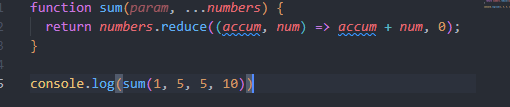

Os Rest Params é uma forma de passarmos quantos parâmetros quisermos para uma função.
Além disso, ele transforma esses parâmetros em um array, podendo assim ser manipulado de outras formas.
Podemos pensar em Rest Params como se eles fossem literamente o resto dos parâmetros passados ao chamar a função, e é por isso que ele deve ser o último parâmetro passado ao criar a função.
Serve em situações que gostariamos de somar todos os parâmetros, quando queremos tudo que venha depois dos parâmetros que você definiu seja excluido e afins.
A sua sintaxe é igual a de um operador spread (...), apenas colocarmos ele como prefixo de um parâmetro. Veja:
Veja que a soma deu 20 e não 21, pois ele somou apenas o que vinha do rest params, e o primeiro parâmetro não está incluido.